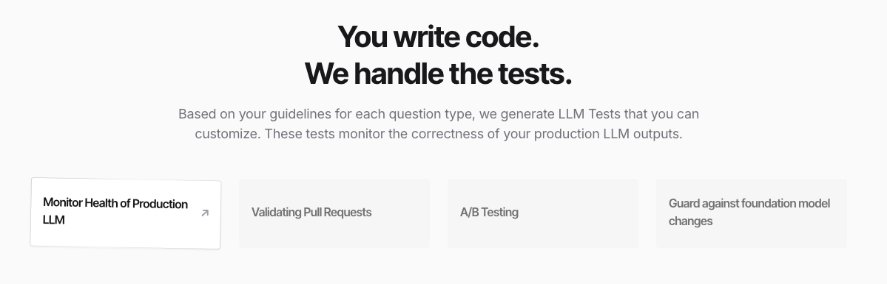
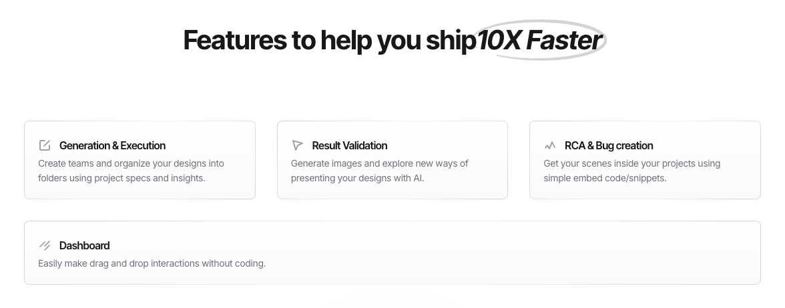

BreakYourLLM documentation¶

Test & Simulate your Production LLMs¶
Break Your LLM before your users do! With our framework, you can build a comprehensive suite of tests that rigorously test your LLM against your guidelines.
Overview¶
This is a comprehensive framework designed for testing and evaluating language models, particularly in the field of Natural Language Processing (NLP). This toolset provides functionalities for running tests, calculating performance metrics, and visualizing results to assess the quality of language models.

Table of Contents¶
Features¶
Model Testing: Execute tests on various language models.
Metrics Calculation: Calculate metrics such as accuracy, hallucination rate, and more.
Result Visualization: Visualize test results for better analysis.
Configurable: Easily configure settings through YAML and environment files.

Technologies¶
Languages: Python
Frameworks/Libraries:
OpenAI
Pandas
NumPy
PyYAML
Requests
Tools:
Pydantic
Python-dotenv
Installation¶
To get started with this project, follow these steps:
Clone the repository:
git clone https://github.com/yourusername/BreakYourLLM.git cd BreakYourLLM
Install the required dependencies:
pip install -r requirements.txt
Configure your environment:
Create a .env file based on the provided .env.example and fill in the necessary variables.
Usage¶
To execute tests and evaluate models, run the following command:
python sources/execute_tests.py
Refer to the documentation in the sources/ directory for more detailed usage instructions.
Codebase Organization¶
The project is organized as follows:
BreakYourLLM/
│
├── config/ # Configuration files
│ ├── .env # Environment variables
│ └── config.yaml # Configuration settings
│
├── sources/ # Source code
│ ├── execute_tests.py # Script for executing tests
│ ├── full_pipeline.py # Full testing pipeline script
│ ├── helpers/ # Helper scripts
│ ├── metrics/ # Metrics calculation modules
│ ├── models/ # Model-related modules
│ └── views/ # Result visualization modules
│
└── requirements.txt # Project dependencies
Contributing¶
We welcome contributions! Please follow these steps:
Fork the repository.
Create a new branch (git checkout -b feature/YourFeature).
Make your changes and commit them (git commit -m ‘Add some feature’).
Push to the branch (git push origin feature/YourFeature).
Open a pull request.
API Documentation: